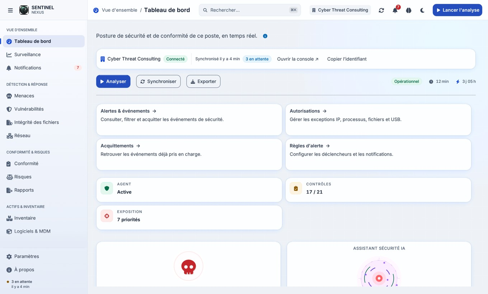
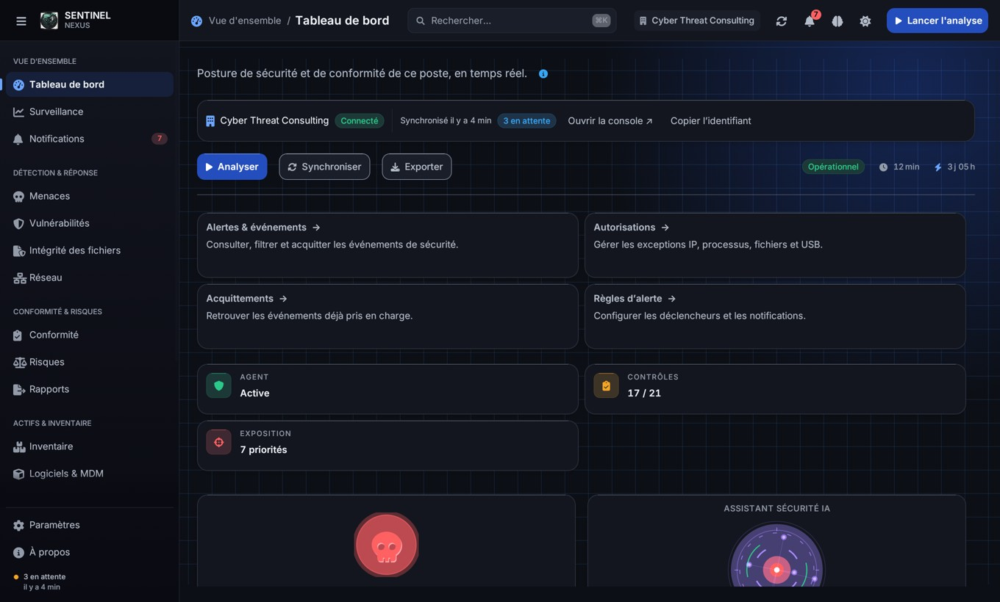
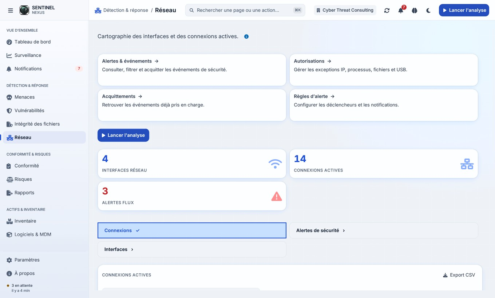
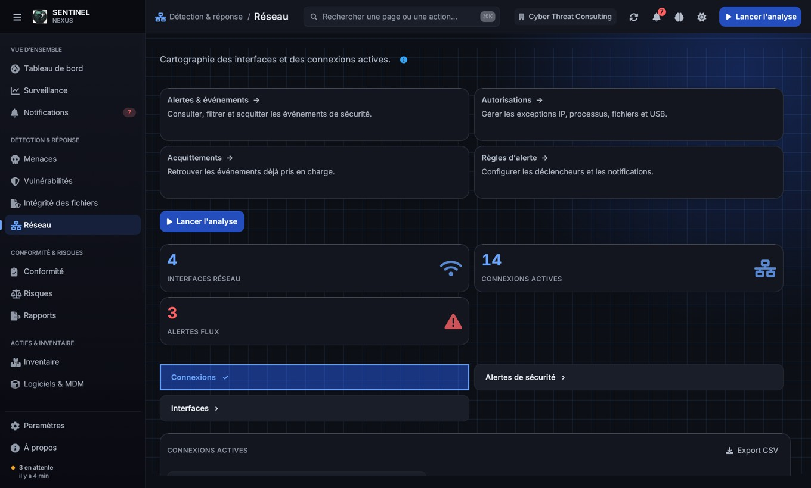
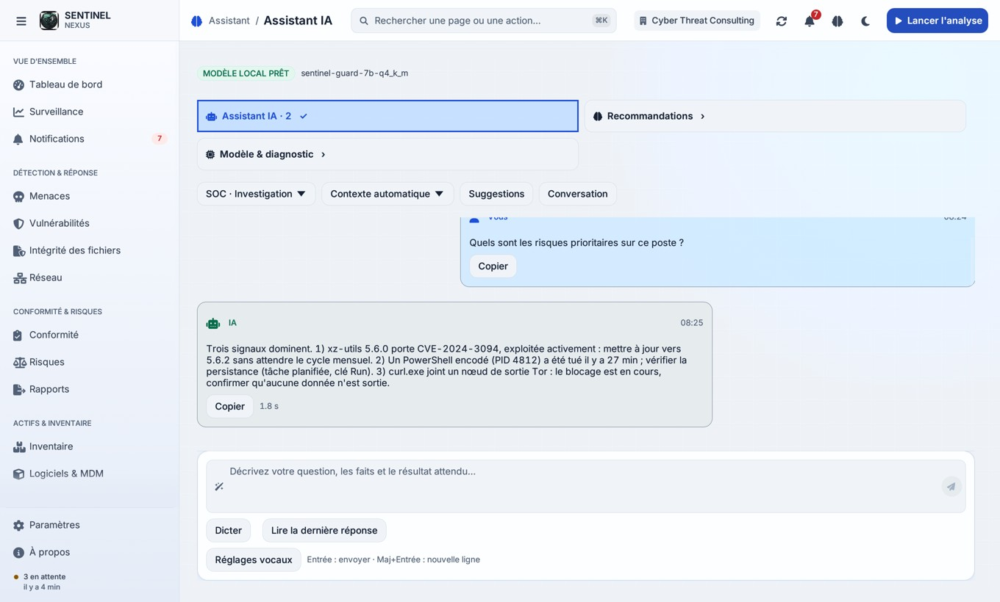
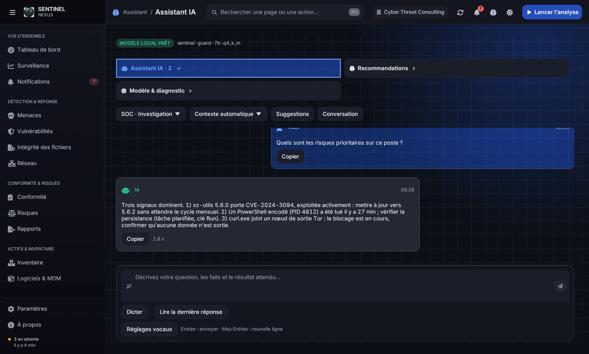
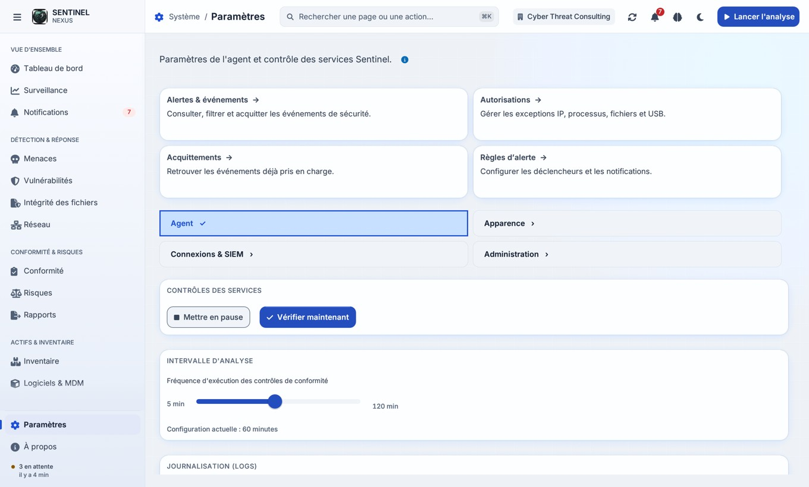
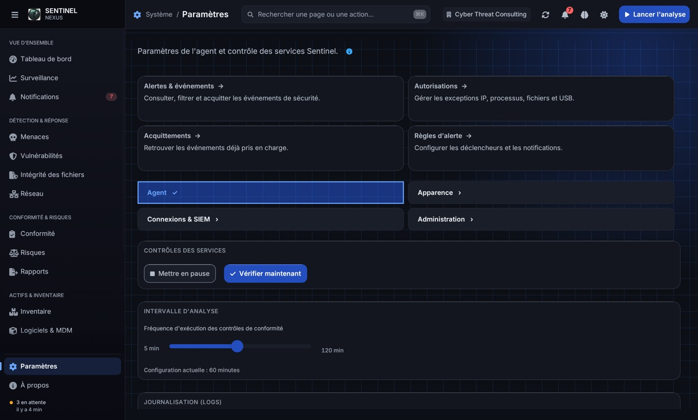

Une finition dédiée au thème clair
Fond perlé, surfaces porcelaine, typographie bleu nuit, ombres bleutées à deux niveaux et reflets sur les arêtes. La navigation utilise un dégradé froid, le fond un éclairage discret et le visuel IA une base violette plus lisible.
Quatre pages capturées dans les deux thèmes avec données synthétiques. Les composants partagés diffusent la palette à l’ensemble de l’interface ; ces aperçus ne valident pas chaque interaction ni les effets animés de survol.
dashboard-light
dashboard-dark
network-light
network-dark
ai-light
ai-dark
settings-light
settings-dark